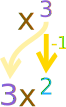

Power Rule
The Power Rule, one of the most commonly used derivative rules says:
The derivative of xn is nx(n−1)
Example: What is the derivative of x2 ?
For x2 we use the Power Rule with n=2:
| The derivative of x2 | = | 2x(2−1) |
| = | 2x1 |
|
| = | 2x |
Answer: the derivative of x2 is 2x
"The derivative of" can be shown with this little "dash" mark: ’
Using that mark we can write the Power Rule like this:
f’(xn) = nx(n−1)
Example: What is the derivative of x3 ?
f’(x3) = 3x3−1 = 3x2
"The derivative of" can also be shown by d dx
Example: What is d dx (1/x) ?
1/x is also x-1
Using the Power Rule with n = −1:
d dx xn = nxn−1
d dx x-1 = −1x-1−1 = −x-2
How to Remember

"multiply by power
then reduce power by 1"
A Short Table
Here is the Power Rule with some sample values. See the pattern?
| f | f’(xn) = nx(n−1) | f’ |
|---|---|---|
| x | 1x(1−1) = x0 | 1 |
| x2 | 2x(2−1) = 2x1 | 2x |
| x3 | 3x(3−1) = 3x2 | 3x2 |
| x4 | 4x(4−1) = 4x3 | 4x3 |
| etc... | ||
| And for negative exponents: | ||
| x-1 | −1x(−1−1) = −x-2 | −x-2 |
| x-2 | −2x(−2−1) = −2x-3 | −2x-3 |
| x-3 | −3x(−3−1) = −3x-4 | −3x-4 |
| etc... | ||